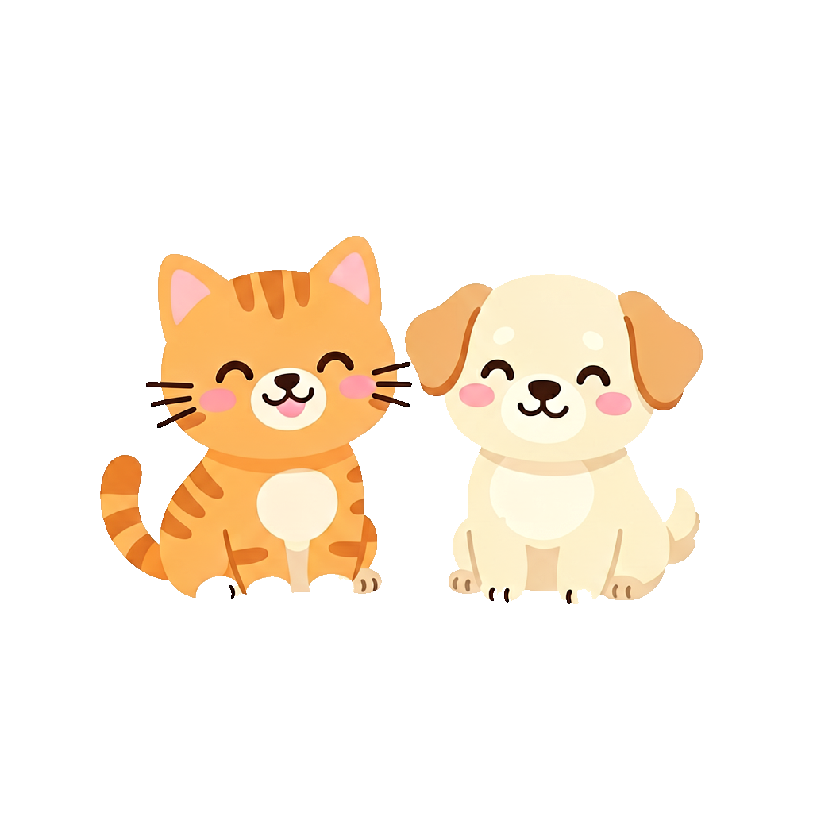
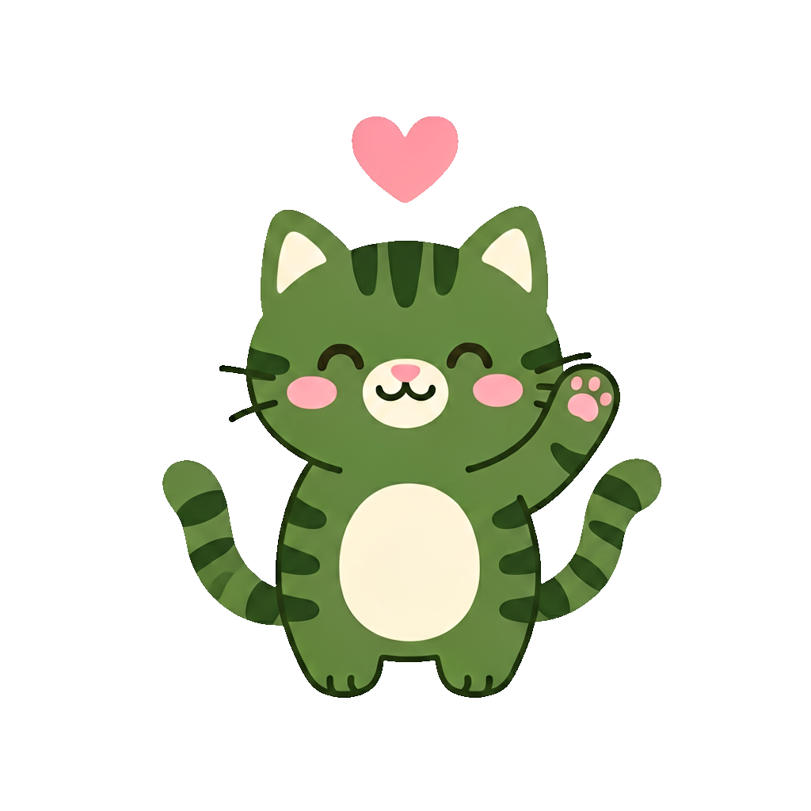

V1.0 需求原型演示
| ID | 分类 | 问题内容 | 题型 | 选项 | 使用次数 | 创建人 | 创建时间 | 操作 |
|---|---|---|---|---|---|---|---|---|
| 1 | 诊疗类 | 您对本次诊疗效果是否满意？ | 评分 | - | 12 | admin | 2026-01-15 | |
| 2 | 诊疗类 | 医生诊断解释是否清晰易懂？ | 评分 | - | 8 | admin | 2026-01-15 | |
| 3 | 服务类 | 医护人员服务态度如何？ | 评分 | - | 15 | admin | 2026-01-15 | |
| 4 | 吐槽类 | 您对我们有何建议？ | 问答 | - | 10 | admin | 2026-01-15 | |
| 5 | 吐槽类 | 您不满的地方是？ | 多选 | 等待时间长/费用高/环境差 | 6 | admin | 2026-01-16 |
| 编号 | 模板名称 | 题目数量 | 填写次数 | 综合评价 | 关联医院 | 状态 | 创建时间 | 操作 |
|---|---|---|---|---|---|---|---|---|
| T001 | 满意度调查 | 10 | 156 | 4.8 / 5.0 | 瑞辰、初馨 | 启用 | 2026-01-10 | |
| T002 | 初馨意见反馈 | 5 | 23 | 4.9 / 5.0 | 初馨 | 启用 | 2026-01-12 | |
| T003 | 武汉希望满意度调查 | 8 | 0 | - | 希望动物医院 | 启用 | 2026-01-15 |
默认近 30 天 ｜ 统计口径：被依赖跳过的题（skipped）与选答题未作答不计入平均分分母，明细中显示"—"
| 模板 / 题目 | 平均分 | 分布 |
|---|---|---|
| 满意度调查 诊疗效果是否满意 |
4.71 | 5星72% 4星21% 3星5% 2星1% 1星1% |
| 满意度调查 医生解释是否清晰 |
4.65 | 5星69% 4星24% 3星5% 2星1% 1星1% |
| 满意度调查 院内环境是否满意 |
4.48 | 5星58% 4星31% 3星9% 2星1% 1星1% |
| 满意度调查 改进建议（选答） |
— | 作答率 46%（142/312）｜ 未作答不计入统计 |
| 满意度调查 不满原因（多选） |
— | 等待时间长 41% 费用偏高 23% 环境体验 12% |
点击行 → 下钻该题答卷明细（右侧列表联动）；多选/问答题不计算平均分，仅显示作答占比。
| 答卷 | 医院 | 综合分 | 提交时间 | 已读 | 操作 |
|---|---|---|---|---|---|
| #10234 | 瑞辰华南 | 4.75 | 05-02 14:30 | 已读 | |
| #10233 | 初馨 | 3.20 | 05-01 10:15 | 未读 | |
| #10231 | 希望 | 4.50 | 04-28 16:45 | 已读 |
"已读"= 工作人员已查看过该答卷；"联系方式"在详情弹窗中展示（小程序手机号验证登录，可回拨联系回访）。
品牌仅作筛选维度（不可选），实际按所选医院生成二维码；选择品牌后医院下拉联动刷新，可改回"全部品牌"。选定医院后，模板下拉只显示该院归属的启用模板（非归属组合不可生成）。
先选医院，再从其归属模板中选择；若该院无归属模板则无法生成，需先在模板管理中关联。
| 医院名称 | 医院等级 | 详细地址 | 负责人 | 修改日期 | 下发状态 | 操作 |
|---|---|---|---|---|---|---|
|
瑞
瑞辰华南动物医院 瑞辰 |
中心医院 | 广东省深圳市南山区科技园南路88号 | 张灵巧 18735265041 |
2026-08-07 17:10:45 | 已开启 | 编辑 … |
|
瑞
瑞辰华诺爱侣（上海）宠物医院 瑞辰 |
中心医院 | 上海市浦东新区张江高科技园区 | 蔺相如 18888888888 |
2025-11-27 16:17:49 | 未开启 | 编辑 … |
|
初
初馨宠物医院 初馨 |
社区医院 | 北京市西城区广安门外大街甲59号 | 张思礼 18888886666 |
2026-07-21 09:33:12 | 已暂停 模板停用 | 编辑 … |
|
排
排班测试医院 望宠 |
社区医院 | 陕西省西安市雁塔区…… | 张三 18888888888 |
2026-05-02 10:00:00 | 无权限配置 | 编辑 … |
"…"更多菜单为现有后台原样（推广/通知配置/开票配置/预约配置/排班管理/删除），新增"综合配置（下发）"入口。下发状态：已暂停 = 模板停用后自动暂停；模板重新启用且该院配置未变更 → 自动恢复下发；停用期间不补推。
仅显示该院归属且启用的模板（t_template_org 交集）；望宠猫科医院等未归属该院模板不展示
系统按接收状态自动轮询渠道，无需配置；结果写 s_survey_push_log（WECHAT_SENT / SMS_FALLBACK）
同一医院同一宠主 24h 内仅推送一次（orgId+clientId 去重，DUPLICATE 幂等命中）；渠道轮询结果全部写 s_survey_push_log（后端日志，B端不提供查看页，G5）。接口出入参与返回码见"技术文档 · 六、HIS 联动与推送接口"。
版本 V1.0 ｜ 配套原型：本文件"问题库管理 / 模板管理 / 调查明细 / 推广二维码"四个页签 ｜ 适用读者：开发、测试、评审
现状问题：旧系统中调查模板只能在数据库里直接维护，模板不与医院进行绑定，推广生成；题目类型仅支持单选、问答、评级三种；医院推广时逐医院生成二维码；调查结果只能在调查明细中逐条查看，缺乏统计汇总，工作人员无法快速了解整体满意度。
重构目标：
| 角色 | 说明 | 可用功能 |
|---|---|---|
| 管理员 | 集团管理员 | 全部功能：问题库、模板、明细统计、二维码生成、医院下发配置（含跨品牌批量同步） |
| 品牌/医院工作人员 | 门店端使用 | 查看本院调查明细与统计、推广本院二维码、配置本院下发（仅本院，同步范围限本院归属医院∩权限医院） |
| 患者（C端） | 扫码/收推送填写者 | 填写问卷（扫码或微信/短信推送链接进入同一 C端页面） |
| HIS 系统 | 外部调用方（机器） | 诊疗结束时调用 POST /open/his/survey/push 触发下发判断与推送；HMAC 签名鉴权，仅能查询/触发，不能改配置 |
C端两条入口汇入同一填写页：① 扫"推广二维码"（线下主动入口）；② 诊疗结束自动下发的微信模板消息/短信链接（HIS 触发入口）。两条入口指向同一 /survey/{qrId}，统计口径统一，仅来源渠道不同（可后续在 s_survey 加 source 字段区分扫码/推送，本期不做）。
模板停用后不做补推（裁决 G6）：停用窗口内的 HIS 回调一律返回 NOT_READY，启用后仅对窗口之后的新诊疗事件生效。
业务说明：集中管理所有可复用题目。模板创建时优先从问题库选题，保证口径统一、便于横向统计对比。
业务说明：模板 = 一组有序题目 + 依赖规则 + 关联医院/品牌。旧系统中"模板不关联医院"的结构升级为"一模板多医院"，医院按品牌/单店粒度挂载。
业务说明：将"逐条翻答卷"升级为"先看汇总、再钻明细"。分两层：
业务说明：宠主扫码或从小程序进入填写页。UI 设计见本文件"宠主端UI设计"页签（填写页/依赖跳过/成功页/异常态四类界面）。与旧版差异：题目与依赖关系不再写死在页面，全部由模板快照 + 依赖配置驱动。
业务说明：在现有后台"医院管理"列表为医院增加"综合配置"能力——配置该院诊疗结束后是否自动下发满意度调查、下发哪个模板。HIS 诊疗结束（HIS 侧行为）时调用本系统接口判断并推送，本系统不改造 HIS。下发链接复用"推广二维码"产出的 医院×模板 有效码（两者互不影响：扫码是线下主动入口，自动下发是诊疗后触达入口）。
| 页面 | 交互点 | 逻辑说明 |
|---|---|---|
| 问题库-新增/编辑 | 题型切换 | 选单选/多选 → 展开选项编辑区（≥2个，≤10个，可增删行）；评分/问答 → 隐藏选项区。切换题型不保留旧选项值。 |
| 问题库-删除 | 行操作 | 使用次数>0 → 确认弹窗列出引用模板，确认后自动清理模板内引用及依赖；使用次数=0 → 直接确认删除。 |
| 模板-模板编辑 | 品牌勾选 | 勾选品牌节点默认选中其下全部医院，可单独取消某医院；取消品牌则其下医院全部取消。 |
| 模板-问题配置 | 从问题库添加 | 弹窗按分类/题型筛选问题库，勾选后追加到模板末尾；已添加的题在弹窗内置灰不可重复勾选。 |
| 模板-问题配置 | 手动添加 | 弹窗表单（内容/分类/题型/选项），保存为模板自定义题（不落问题库）；弹窗层级必须在当前页之上（z-index 高于页面所有元素）。 |
| 模板-问题配置 | 排序 | 上移/下移实时调整序号；依赖条件中"问题X"的引用按题ID而非序号，排序后引用不失效。 |
| 模板-问题配置 | 依赖配置 | 见 4.2 规则。切换父题下拉 → 答案下拉即时重载为该父题的可选值；已有条件时隐藏添加入口。 |
| 调查明细 | 筛选/下钻 | 筛选条件变化即刷新统计卡片；点击题目行下钻明细弹窗；时间范围默认近30天。 |
| 推广二维码 | 品牌→医院 二级联动 | 品牌下拉仅作筛选、不可选；医院下拉联动刷新（选品牌=该品牌下医院，"全部品牌"=全部医院），医院单选，生成时未选医院则提示"请选择医院"；选中的医院与模板生成二维码，已存在则提示复用。 |
| 医院下发配置 | 综合配置 | 单院配置：开启开关 + 模板单选（仅显示该院归属且启用的模板）+ 渠道勾选（微信模板消息优先、短信兜底）；保存写 t_org_survey_config。 |
| 医院下发配置 | 同步到其他医院 | 同步项 = 该模板归属医院 ∩ 角色有权限医院，其余医院不展示；勾选后"保存并同步"逐院写入，整单事务，部分失败返回逐院原因，可重试。 |
| 医院下发配置 | 模板停用联动 | 停用模板弹强提醒二次确认；停用后下发自动暂停（列表显示"已暂停"）；重新启用且该院配置未变更 → 自动恢复为"已开启"，无需人工。 |
| 字段 | 说明 | 备注 |
|---|---|---|
| ID | 问题唯一编号 | 自增 |
| 分类 | 诊疗类/服务类/吐槽类 | 彩色标签展示 |
| 问题内容 | 题干文本，≤100字 | 超长省略+悬浮全文 |
| 题型 | 评分/单选/多选/问答 | |
| 选项 | 单选/多选的选项摘要（/分隔），其余显示 - | |
| 使用次数 | 被模板引用累计次数 | 由模板侧引用关系统计 |
| 创建人/创建时间 | 审计字段 | |
| 操作 | 编辑/删除 | 删除有引用校验 |
| 字段 | 必填 | 规则 |
|---|---|---|
| 问题内容 | 是 | 2~100字，不能与同分类下现有题重复（提示"该分类已存在相同问题"） |
| 分类 | 是 | 三选一 |
| 题型 | 是 | 四选一 |
| 选项 | 单选/多选项 | 2~10个，每个≤20字，同题内不可重复 |
| 字段 | 必填 | 规则 |
|---|---|---|
| 模板名称 | 是 | 2~50字，全局唯一，重复提示"模板名称已存在" |
| 关联医院/品牌 | 是 | 树形多选≥1个；品牌勾选联动其下医院 |
| 备注 | 否 | ≤200字 |
| 字段/控件 | 说明 |
|---|---|
| 题目卡片 | 题干 + 分类标签 + 题型 + 序号 + 上移/下移/删除；来源标记"库内题/自定义题" |
| 是否必填（每道题） | 卡片内"设为必答（必填）"开关，勾选=必答，取消=选答；默认勾选。自定义题在"手动添加"弹窗中同样配置 |
| 依赖条件（每题至多1条） | 当[父问题▾] 答案等于[答案值▾] 时，[显示|跳过▾] [删除] |
| 父问题下拉 | 选项 = 当前题之前的题目（按题ID引用，排序不失效）；首题无下拉 |
| 答案值下拉 | 随父题题型联动：评分→1~5星；单选/多选→父题选项；问答→无内容/有内容 |
| 添加条件按钮 | 仅当该题无条件 且 非首题 且 非末题 时展示 |
| 页面 | 字段 |
|---|---|
| 调查明细-统计 | 总填写次数、综合平均分、模板平均分、分类平均分；题目维度：平均分/分布占比 |
| 调查明细-答卷 | 答卷ID、模板、医院、提交时间、各题答案（被跳过的题显示"未展示"） |
| 推广二维码 | 医院、品牌、模板、二维码图片、URL(qrId)、短链(可生成)、生成时间、状态、扫码次数 |
| 字段/控件 | 说明 |
|---|---|
| 下发状态 | 已开启 / 未开启 / 已暂停（模板停用自动暂停）；列表列展示 |
| 自动下发开关 | 开启后 HIS 诊疗结束即触发判断；写 t_org_survey_config.enabled |
| 下发模板 | 单选，可选范围 = 该院归属 且 启用的模板；无可选模板时置灰并提示 |
| 推送渠道 | 微信模板消息（优先）/ 短信兜底，可组合；决定 channels 字段 |
| 同步到其他医院 | 多选，选项 = 该模板归属医院 ∩ 角色权限医院；其余医院不展示；"保存并同步"批量写入 |
| 权限提示 | 角色无权限的医院：列表置灰"无权限配置"，综合配置按钮禁用 |
版本 V1.0 ｜ 内容范围：数据库表设计、字段说明、核心逻辑与接口约定（不含代码）
共 7 张表：问题 2 张（题干+选项）、模板 3 张（模板信息、模板-题目关系、题目依赖条件）、答卷 2 张（答卷+答案明细）、推广 1 张（二维码）。医院/品牌复用现有机构表，不做重复设计。
t_template_question 存引用（可继续用问题库的题）、同时保存题干/选项/必填标志快照（模板修改与问卷作答不互相干扰）；依赖条件独立成表 t_question_condition，挂在模板题目上（每模板题目至多 1 条，与 PRD 规则一致）；t_org_survey_config 是医院下发开关（一院一行覆盖式更新），s_survey_push_log 记录每次 HIS 触发与推送结果（去重与对账依据）。| 字段 | 类型 | 必填 | 说明 |
|---|---|---|---|
| id | bigint PK | 是 | 自增 |
| category | tinyint | 是 | 分类：1诊疗 2服务 3吐槽 |
| title | varchar(200) | 是 | 题干，≤100字 |
| type | tinyint | 是 | 题型：1评分 2单选 3多选 4问答 |
| use_count | int | 是 | 被模板引用次数（冗余计数，保存时更新） |
| status / creator / create_time / update_time / deleted | — | 是 | 状态、审计、软删 |
唯一约束：(category, title) 不删除时唯一（同分类题干不可重复）。
| 字段 | 类型 | 说明 |
|---|---|---|
| id | bigint PK | 自增 |
| question_id | bigint, 索引 | 外键→q_question.id |
| option_text | varchar(50) | 选项文本，≤20字 |
| sort | int | 选项顺序（1~10） |
约束：同一 question_id 下 option_text 唯一；评分/问答题型无选项记录。
| 字段 | 类型 | 必填 | 说明 |
|---|---|---|---|
| id | bigint PK | 是 | 自增 |
| code | varchar(20) | 是 | 模板编号（T001…），全局唯一 |
| name | varchar(100) | 是 | 模板名称，全局唯一，2~50字 |
| remark | varchar(200) | 否 | 备注 |
| question_count | int | 是 | 题目数（冗余，保存时更新） |
| fill_count | int | 是 | 填写次数（冗余，答卷提交时+1） |
| avg_score | decimal(3,2) | 否 | 综合评价平均分（冗余，统计时更新） |
| status | tinyint | 是 | 1启用 0停用 |
| creator / create_time / update_time / deleted | — | 是 | 审计字段，deleted 软删 |
| 字段 | 类型 | 说明 |
|---|---|---|
| id | bigint PK | 自增 |
| template_id | bigint, 索引 | 外键→t_template.id |
| org_id | bigint, 索引 | 医院或品牌ID（复用现有机构表） |
| org_type | tinyint | 1品牌 2医院 |
联合索引 (template_id, org_id)；"一模板多医院"即一行一模板一医院。品牌勾选联动逻辑在前端完成，落库时品牌与医院各存对应行。
| 字段 | 类型 | 必填 | 说明 |
|---|---|---|---|
| id | bigint PK | 是 | 自增，C端按此 ID 标识"模板内的题" |
| template_id | bigint, 索引 | 是 | 外键→t_template.id |
| source | tinyint | 是 | 来源：1问题库 2自定义题 |
| question_id | bigint, 可空 | 否 | 外键→q_question.id（仅 source=1 时有值；题库题被删除后本行保留快照仍可展示） |
| category | tinyint | 是 | 分类快照 |
| title | varchar(200) | 是 | 题干快照 |
| type | tinyint | 是 | 题型快照：1评分 2单选 3多选 4问答 |
| required | tinyint | 是 | 必填标志快照：1必答 0选答（默认1；C端"必答"标记与提交前校验依据） |
| options | json | 否 | 选项快照（数组，单选/多选有值） |
| sort | int | 是 | 模板内顺序 |
索引：(template_id, sort)。依赖条件引用的是本表 id（稳定，排序不失效）。required 随模板题目配置写入快照：运营在"问题配置"页可对每道题单独勾选/取消"设为必答"，落库为该题一行快照；题库侧题目默认必填（1），但同一题可被不同模板设为不同的必填态，互不影响。
| 字段 | 类型 | 必填 | 说明 |
|---|---|---|---|
| id | bigint PK | 是 | 自增 |
| template_id | bigint, 索引 | 是 | 冗余模板ID，便于按模板整体加载 |
| tq_id | bigint, 唯一索引 | 是 | 外键→t_template_question.id（被控制的题目，唯一：每题至多1条条件） |
| parent_tq_id | bigint, 索引 | 是 | 外键→t_template_question.id（父题，必须 sort 小于本条） |
| answer_value | varchar(50) | 是 | 匹配的答案值：星级（1~5）、选项文本、"HAS"/"NONE"（问答有/无内容） |
| action | tinyint | 是 | 1显示 2跳过 |
| 字段 | 类型 | 必填 | 说明 |
|---|---|---|---|
| id | bigint PK | 是 | 答卷ID（建议雪花ID防并发） |
| qrcode_id | bigint, 索引 | 是 | 外键→p_qrcode.id |
| template_id | bigint, 索引 | 是 | 冗余模板ID，便于按模板统计 |
| org_id | bigint, 索引 | 是 | 冗余医院ID，便于按医院统计 |
| submit_time | datetime, 索引 | 是 | 提交时间（统计时间维度） |
| avg_score | decimal(3,2) | 否 | 本答卷平均分（提交时计算，加速明细展示） |
| client_id | varchar(64) | 否 | 设备/用户标识，幂等控制用 |
幂等约束：联合唯一 (qrcode_id, client_id)（同码同人只允许提交一次；"允许多次"场景则去掉 client_id 唯一并另加频率限制）。
| 字段 | 类型 | 必填 | 说明 |
|---|---|---|---|
| id | bigint PK | 是 | 自增 |
| survey_id | bigint, 索引 | 是 | 外键→s_survey.id |
| tq_id | bigint, 索引 | 是 | 外键→t_template_question.id（答卷时的题ID快照） |
| title / type / category | — | 是 | 题目快照冗余（统计直接查本表，不依赖模板后续变更） |
| answer | varchar(500) | 否 | 答案：星级1~5 / 选项文本（多选逗号分隔）/ 文本题全文 |
| skipped | tinyint | 是 | 1=被依赖逻辑跳过未展示（明细显示"未展示"），0=正常作答 |
被跳过的题也要写一行 skipped=1 的记录，明细页才能完整还原答卷视图；统计计算时过滤 skipped=1。索引 (survey_id, tq_id)。
| 字段 | 类型 | 必填 | 说明 |
|---|---|---|---|
| id | bigint PK | 是 | 自增，C端URL为 /survey/{id} |
| template_id | bigint, 索引 | 是 | 外键→t_template.id |
| org_id | bigint, 索引 | 是 | 医院ID（二维码仅按医院生成，前端二级联动选中的医院） |
| org_type | tinyint | 是 | 固定 2（医院）；品牌不可选，仅作为前端筛选维度，不落库 |
| qr_image | varchar(500) | 是 | 二维码图片对象存储路径 |
| short_url | varchar(64) | 否 | 短链（如 s.example.com/{id}），点击"生成短链"时调用短链服务创建并回填；用于短信/模板消息文案，C端访问 302 到 /survey/{id} |
| status | tinyint | 是 | 1启用 0停用 |
| scan_count | int | 是 | 扫码次数（C端访问时异步+1） |
| expire_time | datetime | 否 | 默认生成时间+1年，过期C端提示"问卷已过期" |
有效唯一约束：(template_id, org_id, org_type) 在 status=1 时唯一（复用现有启用码；重新生成=旧的置停用后建新码，或原地重刷图片）。
| 字段 | 类型 | 必填 | 说明 |
|---|---|---|---|
| id | bigint PK | 是 | 自增 |
| org_id | bigint, 唯一索引 | 是 | 医院ID（org_type 固定医院；一医院一行，配置覆盖式更新） |
| template_id | bigint, 索引 | 是 | 下发模板，必须命中 t_template_org 该院归属行；模板变更时旧行直接覆盖 |
| enabled | tinyint | 是 | 1开启 0关闭（HIS 下发判断接口读此字段） |
| channels | varchar(32) | 是 | 推送渠道位标记：WECHAT 微信模板消息 / SMS 短信，可组合"WECHAT,SMS"；短信兜底=组合含 SMS 时模板消息失败自动触发 |
| dedup_window_hour | int | 是 | 同院同宠主去重窗口（默认24h），防连台就诊重复推送 |
| creator / create_time / update_time | — | 是 | 审计；update_time 用于"模板重新启用且配置未变更→自动恢复"判定（比较更新人/时间是否仍为原配置） |
规则：① 配置可选模板 = 该院归属且启用 的模板；模板停用时不改本表，下发自动暂停（判断接口实时联查 t_template.status=1，停用即 NOT_READY）；② 模板重新启用 且 本行 update_time 未变（配置未变更）→ 自动恢复，无需人工；③ 批量同步 = 逐院写本表（事务内，任一院越权/非归属则整单回滚并返回逐院原因）。
| 字段 | 类型 | 必填 | 说明 |
|---|---|---|---|
| id | bigint PK | 是 | 雪花ID |
| org_id | bigint, 索引 | 是 | 医院ID |
| qrcode_id | bigint, 索引 | 是 | 外键→p_qrcode.id（推送使用的有效码，短链从其 short_url 取） |
| bill_id | varchar(64), 索引 | 是 | HIS 病历/医嘱单号（追溯源头） |
| client_id | varchar(64), 索引 | 是 | 宠主标识（openid / 手机号，与 C端提交幂等键同源） |
| channel | varchar(16) | 是 | 实际渠道：WECHAT / SMS / WECHAT_FAILED_SMS（模板失败转短信） |
| status | tinyint | 是 | 0待发送 1已发送 2发送失败 3已跳过（去重窗口内重复请求） |
| fail_reason | varchar(200) | 否 | 失败原因（用户拒收/手机号无效/模板额度不足…） |
| send_time / create_time | datetime | 是 | 去重窗口判断按 create_time |
去重规则：下发判断接口先查 (org_id, client_id, create_time >= now()-dedup_window_hour) 存在 status∈{1,0} 的记录 → 直接返回 DUPLICATED，不再推送。索引 (org_id, client_id, create_time)。
无条件的题一律默认展示；"跳过"动作含义：本被控题隐藏，"显示"动作含义：仅在父题答案匹配时展示（否则隐藏）。
(template_id, submit_time)、(org_id, submit_time) 走索引；大时间范围走汇总表（可按需后加 s_daily_stat，本期不做）。| 模块 | 接口 | 说明 |
|---|---|---|
| 问题库 | GET /question/page | 分页+分类/题型/关键词筛选 |
| POST /question / PUT /question/{id} | 新增/编辑，含选项数组；服务端做重复题干、选项个数校验 | |
| DELETE /question/{id} | 返回引用模板列表（前端二次确认），确认后逻辑删并清理模板引用 | |
| POST /question/import | GET /question/export | Excel 批量导入（逐行校验返回错误行）/导出 | |
| 模板 | GET /template/page | 列表含题目数/填写数/平均分 |
| PUT /template/{id}/info | 保存模板信息（名称/医院/品牌/备注） | |
| PUT /template/{id}/questions | 保存问题配置（题目数组+依赖条件数组），服务端执行 2.6 校验逻辑，失败返回逐条错误 | |
| 明细 | GET /survey/statistics | 入参：时间范围/org/template；返回汇总卡片+题目维度统计 |
| GET /survey/page | GET /survey/{id}/answers | 答卷分页（含医院/时间筛选）+单答卷完整题答（含skipped标记） | |
| 二维码 | POST /qrcode/generate | 入参 templateId+orgId（品牌仅作前端筛选、不落库）；命中有效唯一约束返回已存在码 |
| PUT /qrcode/{id}/status | DELETE /qrcode/{id} | POST /qrcode/{id}/shorten | 启用/停用、删除（仅无答卷的码可删）、生成短链（回填 p_qrcode.short_url，幂等） | |
| 医院下发配置 | PUT /org-survey-config/{orgId} | 保存单院配置（enabled+templateId+channels）；服务端校验：医院归属该模板、模板启用、角色有该医院权限 |
| POST /org-survey-config/sync | 批量同步 {config, targetOrgIds[]}；逐院校验归属∩权限，整单事务，返回逐院结果（成功/原因），可重试 | |
| HIS 开放接口 | POST /open/his/survey/push | HMAC 鉴权；入参 orgId/billId/clientId/phone；返回 OK/NOT_ENABLED/NOT_READY/DUPLICATED/NO_CONTACT/PARTIAL_FAILED，详见六、6.1 |
| GET /open/his/survey/push-log | 按 billId/orgId+时间查推送日志（HIS 对账用） |
| 接口 | 说明 |
|---|---|
| GET /c/survey/load?qrId={id} | 进入填写页：校验码状态/有效期/幂等 → 返回 {status: normal|offline|expired|done}；normal 时返回题目列表（tq 快照含选项 + required 必填标志）+ 依赖条件数组 + 医院名称 |
| POST /c/survey/submit | 入参 {qrId, clientId, answers:[{tqId, answer, skipped}]}；服务端按幂等键 (qrcode_id, client_id) 兜底去重；写 s_survey + s_survey_answer（被跳过的题 skipped=1），更新 t_template 冗余统计。校验：可见且 required=1 的题目必须有 answer，否则拒绝提交返回 4001"存在未必答的必答题"（skipped=1 的题免校验） |
调用方：HIS 在诊疗结束（病历归档/结算）事件触发；提供方：本系统。接口鉴权走 HMAC 签名（双方共享密钥，请求头 X-Sign，防伪造）。
| 项 | 内容 |
|---|---|
| 接口 | POST /open/his/survey/push |
| 入参 | orgId（医院ID）、billId（病历/结算单号）、clientId（宠主 openid，可空）、phone（手机号，可空，兜底短信用）、visitTime（就诊结束时间） |
| 处理顺序 | ① 查 t_org_survey_config(orgId) 不存在或 enabled=0 → NOT_ENABLED；② 联查 t_template.status=1，停用 → NOT_READY（已暂停，HIS 侧无需重试）；③ 去重窗口命中（s_survey_push_log 24h 内有 status∈{0,1}）→ DUPLICATED；④ 取 医院×模板 有效二维码（无则按 4.4 规则自动生成）；⑤ 按 channels 先发微信模板消息，失败/未关注 且 含 SMS → 转短信；⑥ 写 s_survey_push_log（逐渠道一行或合并一行，channel 标记实际渠道） |
| 返回码 | OK（已推送/已进入队列）｜NOT_ENABLED（医院未开启下发）｜NOT_READY（模板停用已暂停，启用后自动恢复）｜DUPLICATED（窗口内已推）｜NO_CONTACT（无 openid 且无/无效手机号，无法兜底）｜PARTIAL_FAILED（多渠道部分失败，detail 逐渠道返回） |
| 返回体示例 | { "code":"OK", "data":{ "pushLogId":123, "qrcodeId":456, "channel":"WECHAT_FAILED_SMS", "qrUrl":"https://s.ex.com/abc" } } |
| 幂等 | (orgId, billId) 唯一索引，HIS 重试同单不重复推送 |
| 接口 | 说明 |
|---|---|
| POST /qrcode/{id}/shorten | 调用短链服务生成 short_url 并回填 p_qrcode.short_url；已存在则直接返回（幂等）。short_url 访问 302 → /survey/{id}，C端统计口径不变（按 qrId 归属）。 |
入口：扫码 / 小程序内跳转进入填写页 ｜ 依据当前需求重构：题目来自模板快照，按依赖配置动态展示，支持四类题型
t_template_question 快照 + t_question_condition 依赖逻辑动态渲染，旧版"固定 4 题"改为"按模板题目 + 条件显隐"。主色 #f97316（橙）+ 辅色奶油白 #fff7ed ｜ 圆角 10~36px ｜ 卡片投影 0 1px 3px ｜ 插画为 AI 生成（assets/ 目录本地引用）


诊疗结束后 HIS 触发下发：微信模板消息优先，失败或无 openid 时短信兜底。消息内链接 = 该医院×模板有效码短链，点击直接进入上述填写页。
此内容受密码保护, 请输入访问密码后查看。